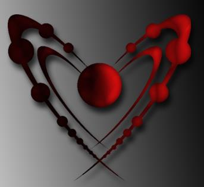

Projects
Blackfoot Dictionary is an Android application that serves to translate between English and Blackfoot. This application is currently under ongoing development and I hope to develop a tool that makes Blackfoot accessible to those who are interested. In it's current iteration, the application allows for translation from English to Blackfoot for a small set of words and generates a phonetic pronounciation for each Blackfoot word. Translation from Blackfoot to English is also possible.
See Blackfoot Dictionary on GitHub: DualityDuality is a third-person game developed using Unreal Development Kit for the Ubisoft Game Lab Competition. Duality takes you on an epic adventure to the world of atoms where as a player you can switch between two distinct worlds and solve puzzles and fight untamed enemies to save the world. Duality won the Jury's Special Award and was nominated for Best Technical Innovation at the Ubisoft Game Lab Competition.
See Duality on GitHub:  Download the first level.